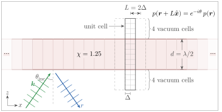
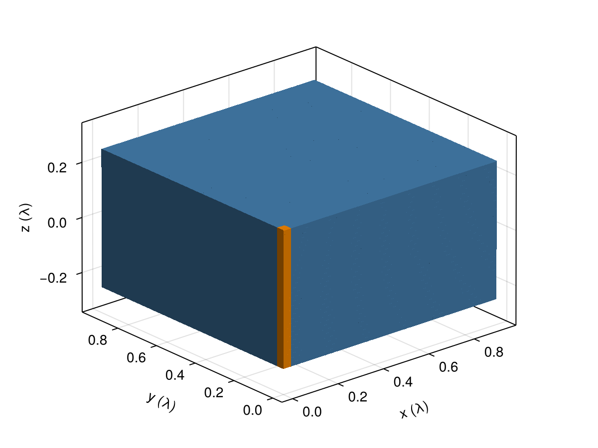
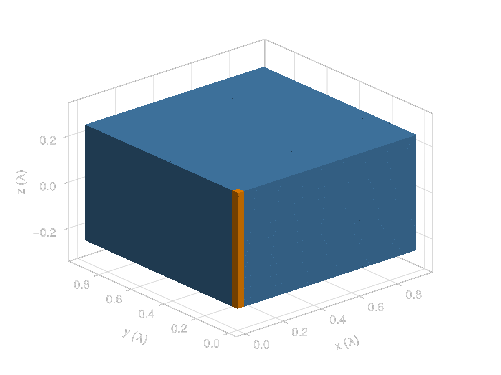
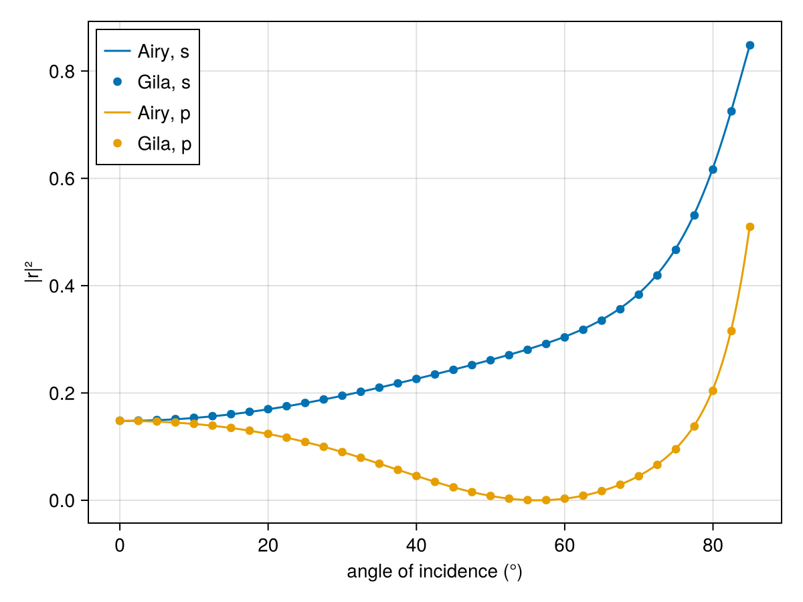
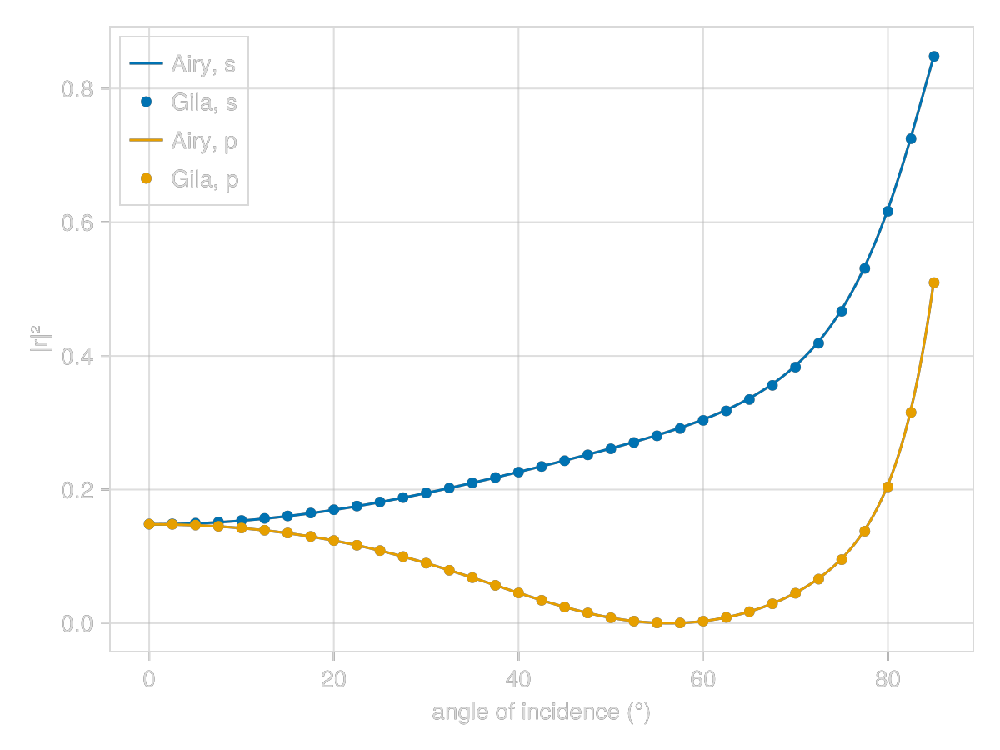

Reflection off a Thin Film
A dielectric film that is infinite in x and y but finite in z has an exact reflection coefficient (the Airy formula for a slab), which makes it a good check of the solver. We can't mesh an infinite film, so instead we mesh one unit cell of it and make that cell Bloch periodic along x and y (see the figure below).

using GilaElectromagnetics, CairoMakieOur film is glass (χ = 1.25, so n = 1.5), half a wavelength thick, and we mesh it at 64 cells per wavelength. A plane wave is the same everywhere in a plane of constant z up to a phase, so the unit cell can be as narrow as Gila allows, which is two cells along x and y. A Bloch operator only acts on its own volume, and so if we want to see the reflected wave we have to keep some vacuum in the mesh. We put four cells of it above the film and four below.
χ = 1.25
thickness = 1//2
Δ = 1//64
period = 2Δ
vacuum_cells = 4
volume = GlaVol((2, 2, Int(thickness / Δ) + 2vacuum_cells), (Δ, Δ, Δ))
film(pos) = abs(pos[3]) < thickness / 2 ? χ : 0.0;To give a sense of scale, we tile the unit cell 30 times along x and y. The orange column in the corner is the unit cell itself (minus the vacuum above and below it).
z = Float64.(volume.grd[3])
χ_column = [film((0, 0, zᵢ)) for _ in 1:2, _ in 1:2, zᵢ in z]
χ_tiled = repeat(χ_column, 30, 30, 1)
χ_tiled[1:2, 1:2, :] .*= 2 # the meshed unit cell
height = Float64(volume.cel[3] * Δ)
fig = Figure()
ax = Axis3(fig[1, 1]; aspect = :data, xlabel = "x (λ)", ylabel = "y (λ)", zlabel = "z (λ)")
voxels!(ax, (0, 60Δ), (0, 60Δ), (-height / 2, height / 2), χ_tiled;
is_air = iszero, colormap = [:steelblue, :darkorange], colorrange = (χ, 2χ))
fig

The lattice goes in through the blc keyword, a named tuple with three entries. ax lists the periodic axes (here x and y), P gives the period along each of them in cells (two, so the period is 2Δ), and θ holds one Bloch phase per axis, in radians. We start at normal incidence, where both Bloch phases are zero.
G₀ = VacuumGreenOperator(volume; blc = (ax = (1, 2), P = (2, 2), θ = (0.0, 0.0)))
W = ScatteringOperator(G₀, film)
X = sus(W); # the susceptibility operator inside WThe plane wave comes in from below at an angle $\theta_\text{inc}$ in the xz plane, with wavevector $\mathbf{k} = 2\pi(\sin\theta_\text{inc}, 0, \cos\theta_\text{inc})$ in units of 1/λ, and it is the in-plane part of it that sets the Bloch phases. Gila's lattice convention is $p(r + L) = e^{-i\theta} p(r)$, while the wave picks up $e^{i k_x L}$ over one period $L = 2Δ$, so the Bloch phase along x is $\theta_x = -k_x L$. With the opposite sign the s reflectance barely moves, but the p reflectance at 60° comes out at 0.12 where it should be 0.003. setBlc! refills the operator at the new phases without rebuilding it.
The field points along y for s polarization and lies in the plane of incidence for p. We drive the film with $p_d = \mathsf{X} f_\text{inc}$, W returns the scattered current density $p_s$, and the scattered field is $f_s = \mathsf{G}_\circ p_s$. Below the film the scattered field is just the reflected wave, a unit plane wave times r, so $|r|^2$ is the squared norm of the field in any vacuum cell under the film, so we just read it off the bottom cell of the mesh ([1, 1, 1, :], all three components).
function reflectance(θ_inc, polarization)
k = 2π .* (sind(θ_inc), 0, cosd(θ_inc))
e = polarization == :s ? (0, 1, 0) : (cosd(θ_inc), 0, -sind(θ_inc))
setBlc!(W, (-k[1] * period, 0.0))
f_inc = discretize!(zeros(volume), r -> e .* cis(sum(k .* r)))
p_d = X * f_inc
p_s = W * p_d
f_s = G₀ * p_s
return sum(abs2, regionview(f_s, 1)[1, 1, 1, :])
end;
angles = 0:2.5:85
R_s = reflectance.(angles, :s)
R_p = reflectance.(angles, :p);The Airy formula sums the multiple reflections between the two faces of the film. Each face reflects with the Fresnel coefficient $r_{12}$, and each round trip through a film of thickness d adds a phase of $4\pi n d \cos\theta_\text{t}$, where $\theta_\text{t}$ is the angle of the wave inside the film (d is thickness in the code).
n = sqrt(1 + χ)
function airy(θ_inc, polarization)
cosθ_t = sqrt(1 - (sind(θ_inc) / n)^2)
r₁₂ = polarization == :s ? (cosd(θ_inc) - n * cosθ_t) / (cosd(θ_inc) + n * cosθ_t) :
(n * cosd(θ_inc) - cosθ_t) / (n * cosd(θ_inc) + cosθ_t)
round_trip = cis(4π * n * cosθ_t * thickness)
return abs2(r₁₂ * (1 - round_trip) / (1 - r₁₂^2 * round_trip))
end;At normal incidence s and p are the same wave, and Gila and Airy agree to about a quarter of a percent.
(gila = R_s[1], airy = airy(0, :s))(gila = 0.1482644f0, airy = 0.14792899408284022)Over the whole sweep, the largest gap to the Airy curve is
max(maximum(abs, R_s .- airy.(angles, :s)), maximum(abs, R_p .- airy.(angles, :p)))0.006078987394616098and it sits at grazing incidence. The p reflection drops to zero at Brewster's angle, atan(n) ≈ 56.3°.
fig = Figure()
ax = Axis(fig[1, 1]; xlabel = "angle of incidence (°)", ylabel = "|r|²")
for (polarization, R) in ((:s, R_s), (:p, R_p))
lines!(ax, 0:0.25:85, θ_inc -> airy(θ_inc, polarization); label = "Airy, $polarization")
scatter!(ax, angles, R; label = "Gila, $polarization")
end
axislegend(ax; position = :lt)
fig

This page was generated using Literate.jl.